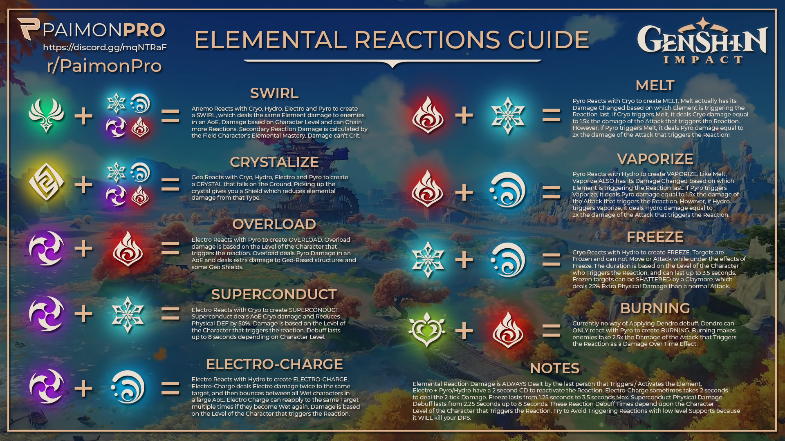
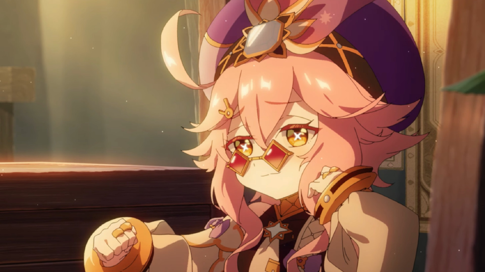

Genshin Impact is an action role-playing game developed and published by miHoYo. It was released for Microsoft Windows, PlayStation 4, iOS, and Android in 2020, and on PlayStation 5 in 2021, and is set for release on Nintendo Switch. The game features an anime-style open-world environment and an action-based battle system using elemental magic and character-switching. The game is free-to-play and is monetized through gacha game mechanics through which players can obtain new characters and weapons. The base game is expanded on a regular basis through patches using the games as a service model. Genshin Impact takes place in the fantasy world of Teyvat, which is home to seven nations, each of which is tied to a different element and ruled by a different god. The story follows the Traveler, who has traveled across countless worlds with their twin sibling before becoming separated in Teyvat. The Traveler travels in search of the lost sibling with their companion Paimon and becomes involved in the affairs of Teyvat's nations. Development of Genshin Impact began in 2017. The game received generally positive reviews, with critics praising the game's combat mechanics and immersive open world, but criticizing its simplistic endgame and monetization model. It had a first-year launch revenue of more than $3 billion in its first year of release, the highest for any video game, and a revenue of more than $4 billion as of March 2022.

Genshin Impact is an open-world action role-playing game that allows the player to control one of four interchangeable characters in a party. Switching between characters can be done quickly during combat, allowing the player to use several different combinations of skills and attacks. Characters may have their strengths enhanced in various ways, such as increasing a character's level and improving artifacts and the weapons that the character equips. In addition to exploration, the player can attempt various challenges for rewards. Scattered across Teyvat are bosses and challenges that reward highly valuable resources, such as Stormterror and the Electro Hypostasis, but claiming them uses up a currency called resin, which slowly regenerates over time. Completing these challenges grants the player progress towards increasing their Adventure Rank, which in turn unlocks new quests, challenges, and raises the World Level. The World Level is a measure of how strong the enemies within the world are and the rarity of rewards that defeating them gives. The player can control their character and perform actions such as running, climbing, swimming, and gliding which are limited by stamina. Some characters possess abilities that can alter the environment, such as freezing water to create an ice path that can aid the player in traversing terrain. Many teleportation nodes exist throughout the world that players can warp to as a form of fast travel; among these are landmarks known as Statues of The Seven that can heal and revive characters, and provide benefits such as increasing player stamina. Items such as food and ore may be procured from the open world, while enemies and treasure chests drop other types of resources that may be used in enhancing a character's strength. Players can obtain food from hunting animals, gathering fruit and vegetables, or purchasing them from a store. Furthermore, there are special battle instances called Domains that also reward materials that increase character and weapon strength. Ingredients that can be cooked into meals that regenerate characters' health or boost various stats. Players can also procure ore that can be refined and then used to create weapons or enhance their strength.  Each character has two unique combat skills: an Elemental Skill and an Elemental Burst. The Elemental Skill can be used at any time except for the cooldown period immediately after use. In contrast, the Elemental Burst has an energy cost, requiring the user to amass sufficient elemental energy by defeating enemies or inflicting elemental status effects. Characters have control over one of seven natural elements: Cryo, Dendro, Pyro, Hydro, Anemo, Electro and Geo; which correspond to ice, plants, fire, water, wind, electricity, and rock, respectively. These elements can interact in different ways; for example, if a Hydro attack hits a target, the enemy will be inflicted with the "Wet" status effect, and if they are hit with a Cryo attack, it will inflict "Cryo". These two status effects combine into the "Frozen" status effect, temporarily preventing the target from performing any actions or until the player deals enough physical damage to the enemy. Switching between characters during combat and executing those skills allows those elemental interactions to take place. Certain elemental abilities may be required to solve puzzles within the overworld. A multiplayer mode is available in the form of co-op. Up to 4 players can play together in the overworld and join Domains. Player matching can either be done by requesting to connect with another player. If the player wishes to clear a Domain with other players, they will be automatically matched up with others looking to tackle the same objective. The game features cross-platform play, so players on any platform can play with each other. By completing quests to advance the story, the player can initially unlock four additional playable characters, and more characters can be obtained via a gacha mechanic and in-game events. Several premium in-game currencies, obtainable through in-app purchases and playing the game, can be used to obtain characters and weapons through the gacha system. A pity system guarantees that the player will receive rare items after a set number of draws.
Yu-Peng Chen of HOYO-MiX composed the game's original score, which was performed by the London Philharmonic Orchestra, the Shanghai Symphony Orchestra, and the Tokyo Philharmonic Orchestra. The approach to creating the soundtrack is to immerse players within the game, and provide emotional and beautiful melodies. Based upon a foundation of Western music, the score also has regional and cultural influences added depending upon the region. For example, in Mondstadt Chen used woodwind instruments to reflect Mondstadt's association with wind and freedom. In contrast, the battle themes use polyphony and other composing techniques, as well as mimicking orchestrion elements from composers such as Beethoven. Several soundtrack albums featuring music about characters and regions of the game have been released periodically. For his work on the soundtrack Chen was awarded the "Outstanding Artist—Newcomer/Breakthrough" at the 2020 Annual Game Music Awards. In an interview published in April 2021 Chen expressed interest in releasing the soundtracks on CD, as well as hosting concerts in the future. The first concert was held virtually on October 3, 2021, titled "Melodies of an Endless Journey" and featured multiple bands and an orchestra performing various soundtracks from the game. A second virtual concert was held on February 4, 2022, titled "Reflections of Spring" featuring the Shanghai Symphony Orchestra performing soundtracks from the Liyue region.

Let's go on an adventure! Experience an immersive single-player campaign. As a traveler from another world, you will embark on a journey to reunite with your long-lost sibling and unravel the mysteries of Teyvat, and yourself. Fly across the open world, swim through crystal-clear waters, and climb towering mountains. Stray off the beaten path to discover all the hidden secrets of a world full of wonder and mystery. Charge head-on into battles solo, or invite friends to join the fight against dangerous monsters with 4-player cross-play for PS4, iOS, Android, and PC. Not just another mindless hack and slash. Manipulating the various elements is the key to defeating powerful enemies and solving challenging puzzles. Choose who fights by your side. Build your party from over 20+ characters (with more to come) — each with unique abilities, personalities, and combat styles.  download now!